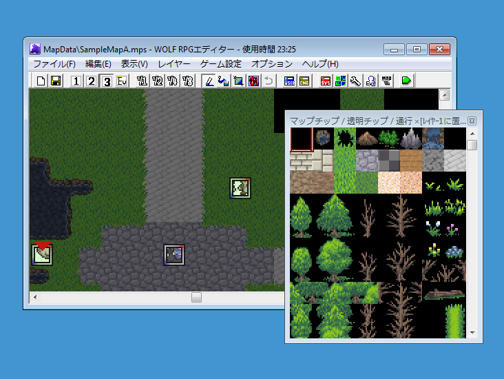

【マップ作成の流れ】
ここではマップの作り方、使い方の説明として、マップの新規作成からシステムデータベースへの登録、ゲーム開始位置の設定、位置の保存機能、の3つについて説明します。

その前に……。
【マップとは】
マップは、WOLF RPGエディターでは「マップチップ」と呼ばれる正方形の小さな画像をつなぎあわせて作られるものです。ゲームでは、キャラクターがこのマップ上を移動します。
【レイヤーとは】
メインウィンドウにあるこれらの1～3のボタンを押すと、レイヤーが選択できます。3つのレイヤーは、言い換えれば3枚の透明のフィルムがあるようなもので、マップ作成時にはこのレイヤーそれぞれにマップチップを貼り付け、ゲーム中では3枚のレイヤーを重ね合わせられた画像が表示されるというわけです。
レイヤーを重ね合わせられる順番は、 1（一番下）→2→3（一番上）の順になっています。
Evボタンで選択されるレイヤーは、イベント配置専用のイベントレイヤーとなっています。
では、次のステップへ進みましょう。
【1.マップの新規作成から登録まで】